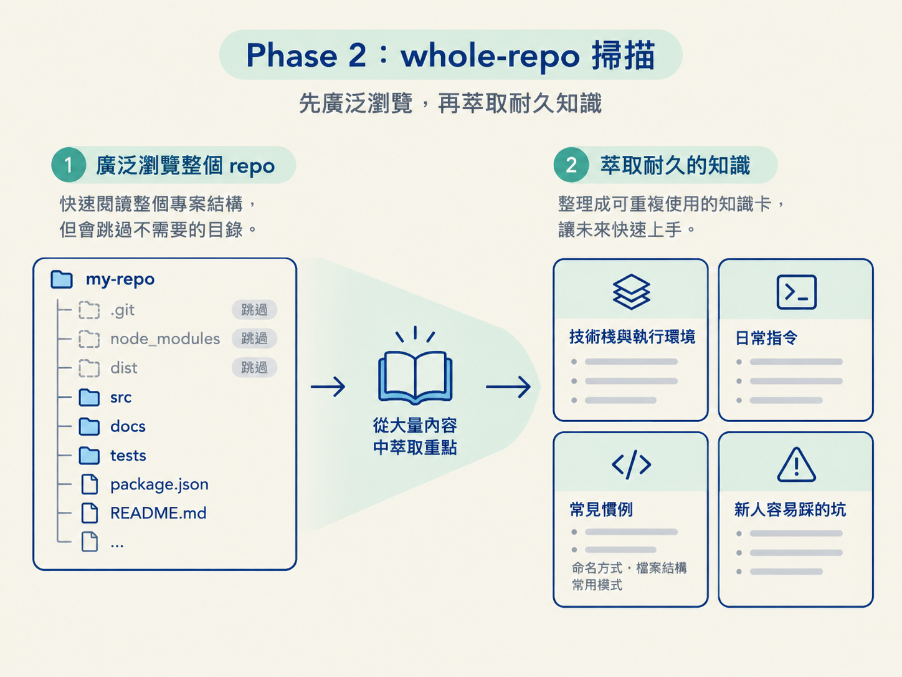
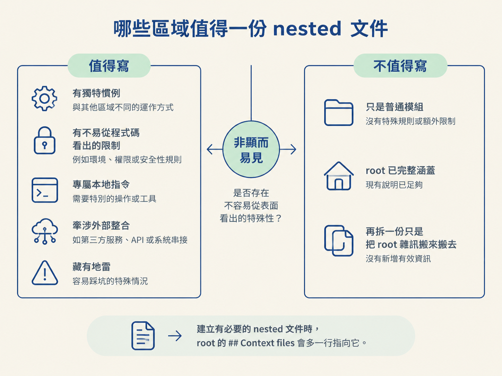
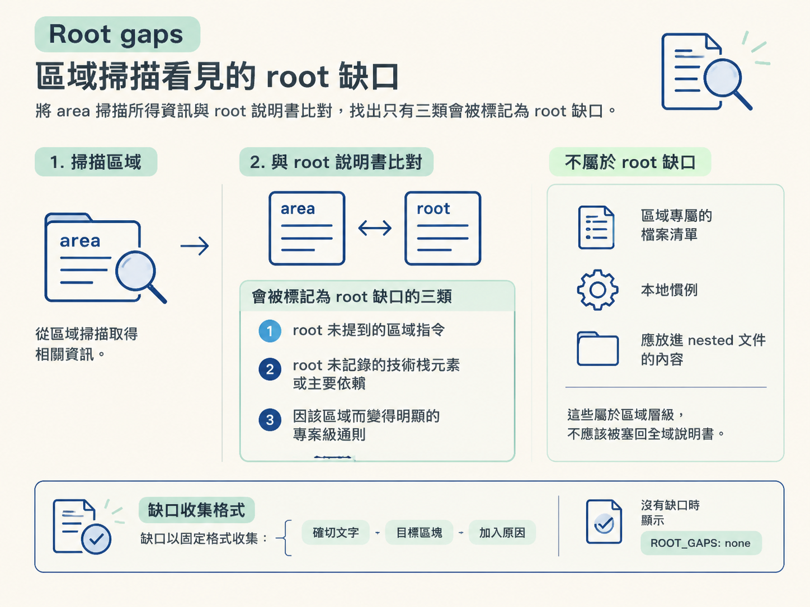

完成 Phase 2 的 whole-repo 掃描與 Phase 3 的 area 掃描，判斷哪些區域值得建立 nested AGENTS.md，並理解如何用 scout 子代理分攤大型 repo 的閱讀工作。
前面討論的是「還沒有慣例」的新專案。但實務上更常遇到另一種情況：codebase 已經運作好幾年，功能也都在，卻沒有文件告訴 AI 它的架構怎麼分、測試怎麼跑，或哪些目錄一碰就可能出問題。
這時，前一節的決策面板就派不上用場了。當你問「應該採用哪種架構風格」時，答案其實早已藏在程式碼裡，只是沒有人把它整理成可供後續工作的說明。
這一節的兩條路線，姿態完全不同：不再先問你，而是先去讀 repo。Phase 2 的 whole-repo 掃描面對整個沒有說明的 repo，目標是產出 root 說明書，以及少數真正需要的區域文件；Phase 3 的 area 掃描則只處理你指定的那一小塊。我們先從範圍最大的 whole-repo 開始。
Phase 2 的觸發條件，就是上一節提到的「真 brownfield」：repo 裡有實際功能碼與開發歷史，但沒有正在進行中的工作流設定。
它和 Phase 1 最大的差別是：Phase 2 不先問問題，而是直接開始探索。探索完成後，它會自行判斷哪些 root 與 nested 文件值得建立。
探索工作分成兩步。
第一步是廣泛瀏覽。先查看專案樹狀結構，通常看幾層深，並跳過 .git、node_modules、dist 這類產生檔或外部依賴所在的目錄。接著讀取幾類關鍵檔案：
go.mod：確認技術棧與依賴。.github/workflows/：了解 CI 與部署方式。AGENTS.md：了解目前已經寫下的規則。第二步是從讀到的內容中，萃取真正耐用的知識，包括技術棧與執行環境、日常會使用的指令，以及程式碼中反覆出現的慣例，例如命名方式、檔案結構與常用模式。

也要記下新人第一週很可能踩到的坑。相反地，實作細節、TODO 註解，以及經常變動的內容都應該排除。把這些東西寫進說明書，就像把今天的施工便條當成永久地圖，之後反而容易誤導人。
寫文件時，還有兩個尺寸上的紀律。
root 說明書維持在約 60 行以內，只放全域都適用的事實。區域專屬的細節則留給 nested 文件。這正是兩層結構的用途：root 負責提供短而全的全局地圖，nested 文件再承載局部知識。
建立 nested 文件最難的地方，通常不是寫作，而是判斷它是否真的值得存在。Phase 2 會逐一檢查主要區域，判斷標準大致如下：
| 值得寫 nested 文件 | 不值得寫 |
|---|---|
| 有自己獨特的慣例，和其他區域不同 | 只是單純模組，沒有特別之處 |
| 有不容易從程式碼看出的規則或限制 | root 已經完整涵蓋相關內容 |
| 有專屬的本地指令 | 遵循 root 的通則就足夠 |
| 牽涉外部整合，或藏著容易踩雷的坑 | 再拆一份只是在搬移 root 原本的雜訊 |
判斷時要抓住「非顯而易見」這個關鍵。nested 文件存在的理由，是讓人準備修改該區域時，先看到一些單靠閱讀程式碼不容易發現的資訊。
不是每個資料夾都該配一份文件。如果每個目錄都堆上一份說明，文件就會從知識變成噪音。每當建立一份確實有必要的 nested 文件，root 的 ## Context files 會多一行指向它。

這樣分層之後，全域事實留在 root，區域知識則貼著對應的程式碼放置。只有當那個區域被編輯時，相關內容才會載入，不會平白佔用其他工作的 context。
Phase 2 最花成本的工作，就是掃描整個 codebase。針對大型 repo，流程會把純閱讀這一段交給唯讀的 scout 子代理。
scout 有幾個固定設定。
主線程再根據這份地圖撰寫文件。這個分工的重點，是讓子代理處理大量閱讀，讓主線程保留最後的整體判斷。
小型 repo 則不需要 scout。若 repo 不大，主線程直接閱讀可能更快，因為建立子代理、傳遞結果與整理溝通內容的成本，可能比親自讀完還高。
這裡有一條不能妥協的界線：真正寫入 AGENTS.md 的永遠是主線程，不交給子代理。
子代理只提供原料，不負責下筆。因為說明書需要做全局取捨：哪些資訊該留下、哪些應該刪掉、不同區域的規則是否互相矛盾。這些判斷需要主線程掌握完整脈絡；若直接外包寫作，容易得到零碎甚至互相衝突的文件。
如果專案是 monorepo，Phase 2 的處理方式會簡化許多：不逐區判斷，而是每個 workspace 都建立一份輕量 stub。
你不需要逐一替每個 apps/*、packages/* 決定是否值得寫文件，因為每個 workspace 本身就被視為一個獨立區域。stub 只記錄該 workspace 的技術棧與指令，內容取自它的 manifest。
更深入的慣例與陷阱，留到之後有人針對該 workspace 單獨執行 /audit packages/api 時再補上。
area 模式是範圍最小的路線。當你在指令後面提供路徑或區域名稱，例如 /audit src/auth，就會觸發這個模式。它的目標很單純：只處理指定的那個區域。
開始之前，流程會先做幾項檢查。
第一，確認指定路徑真的存在。如果路徑不存在，就立刻停止並請你確認後重試，不進行其他動作。
第二，檢查 root 說明書是否存在。如果 root 還沒建立，而且也沒有舊版 CLAUDE.md 可以遷移，流程會先完整執行一次 whole-repo 掃描，補上 root，再回頭執行 area 掃描。
如果只有一份舊版 root CLAUDE.md，則先執行遷移。
第三，確認這個區域是否已經有自己的 AGENTS.md。
完成檢查後，主線程會負責撰寫這個區域的文件，判斷方式和 Phase 2 檢查單一區域時相同。閱讀區域仍然是主要成本，因此大型區域會交給 scout，小型區域則由主線程直接閱讀。
如果該區域原本沒有 AGENTS.md，但判斷後確實值得建立，就建立文件，並在 root 的 ## Context files 補上一行指標。
這裡有一個容易混淆的細節：補上指標是對 root 做編輯，不是重新建立 root。也就是說，root 原本的內容應該保留，只在適當位置增加必要的連結或指標。
area 掃描還會多做一件事：把區域工作需要的資訊，和 root 說明書逐一比對，找出工程師在這個區域工作時會用到、但 root 尚未記下的內容。
不過，並不是所有區域資訊都算 root 缺口。判斷標準很嚴格，只有三類內容符合：
反過來，區域專屬的檔案清單、本地慣例，以及本來就應該放進 nested 文件的內容，都不算 root 缺口。它們屬於區域層級，不應該被塞回全域說明書。

缺口會用固定格式收集。每一筆都記下三件事：
這個格式刻意保留原文，方便之後一字不改地套用。如果掃描後沒有任何缺口，就明確記錄為 ROOT_GAPS: none。
root 可能是你或其他工程師花時間整理過的內容，因此 root gaps 不會自動寫回去。流程會把結果交給你，用三選一的面板決定下一步，其中「現在就加」被標示為建議選項：
| 選項 | 會發生什麼 |
|---|---|
| 現在就加（建議） | 立刻把每一筆缺口依照原文套進 root，不重新措辭 |
| 給我看差異 | 列出每一筆要加入的內容與目標區塊，但不寫入 |
| 暫時跳過 | 維持 root 原樣，不修改任何內容 |
這裡的「建議」不是強迫自動執行，而是提供一個清楚的預設方向。你仍然可以先看差異，或直接保留現況。
不論選哪一個選項，最後都會拿到完整報告。這套「先收集、再詢問、最後才套用」的流程，也為下一節埋下伏筆：當 root 可能包含人工精心寫過的內容時，/audit 要如何安全修改檔案？
Phase 2 面對的是有程式碼、卻沒有說明的完整 repo。它先廣泛瀏覽，再萃取耐久知識；root 控制在約 60 行，區域細節則分散到少數真正值得建立的 nested 文件。大型 repo 的閱讀工作可以交給唯讀、低成本的 scout，但寫入文件永遠由主線程負責。monorepo 則為每個 workspace 建立輕量 stub。Phase 3 只處理指定區域，先檢查路徑與 root 是否存在，再撰寫區域文件，並把區域發現的 root 缺口整理成 ROOT_GAPS，交給你從三個選項中決定是否套用。
到目前為止，四種 phase 已經講完三種。剩下的 Phase 4 看起來最不起眼，卻最考驗紀律：當說明書已經存在，而且可能有人仔細整理過，/audit 憑什麼判斷哪一行可以改、哪一行絕對不能碰？下一節會拆解它的三道保護機制，也會收束整條「絕不覆寫」的原則。